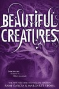
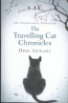

 Beautiful Creatures is een erg leuk boek met veel onverwachte gebeurtenissen waardoor de spanning oploopt en je wil blijven lezen. Ikzelf kon echt niet stoppen met lezen toen ik er eenmaal in zat. Als je houdt van Twilight is dit een erg leuk boek.
 Beautiful Darkness is deel 2 van de Beautiful Creatures-serie, bij dit boek leer je een hele nieuwe Casterwereld kennen en wordt Lena erg verdrietig omdat ze denkt dat ze haar oom heeft vermoord. Ikzelf vond het aan het begin erg irritant om te lezen, aangezien ze ook domme dingen doet en het bijna heel het boek duurt voordat ze een beetje normaal gaat doen. Dat was het enige wat ik jammer vond, daarnaast kom je meer te weten hoe Ridley haar wereld in elkaar zit en dat ze eigenlijk diep van binnen helemaal niet zo'n monster is.
Beautiful Darkness is deel 2 van de Beautiful Creatures-serie, bij dit boek leer je een hele nieuwe Casterwereld kennen en wordt Lena erg verdrietig omdat ze denkt dat ze haar oom heeft vermoord. Ikzelf vond het aan het begin erg irritant om te lezen, aangezien ze ook domme dingen doet en het bijna heel het boek duurt voordat ze een beetje normaal gaat doen. Dat was het enige wat ik jammer vond, daarnaast kom je meer te weten hoe Ridley haar wereld in elkaar zit en dat ze eigenlijk diep van binnen helemaal niet zo'n monster is.
 The Travelling Cat Chronicles is een heeeeel erg leuk boek, dat gaat over een kat die een nieuw baasje moet vinden aangezien zijn baasje stervende is. De kat gaat langs alle oude vrienden van zijn baasje en vindt uit eindelijk niemand. Het is een erg grappig, maar ook verdrietig boek. Ik zou het iedereen aanraden.
 If Cats Disappeared From The World is een erg interessant boek aangezien de hoofdpersoon de duivel ontmoet en een dag langer mag leven als hij telkens 1 ding van de wereld laat verwijderen. Het omschreven effect wat bijv. een wereld zonder telefoon of tijd is, laat je op een andere manier nadenken. En er zit een kat in, dat is altijd een pluspunt.
If Cats Disappeared From The World is een erg interessant boek aangezien de hoofdpersoon de duivel ontmoet en een dag langer mag leven als hij telkens 1 ding van de wereld laat verwijderen. Het omschreven effect wat bijv. een wereld zonder telefoon of tijd is, laat je op een andere manier nadenken. En er zit een kat in, dat is altijd een pluspunt.